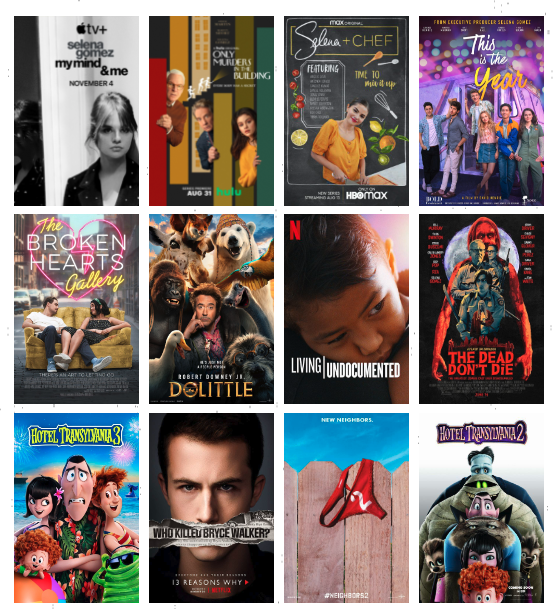

Career
Selena Gomez has had a multifaceted career as an actress, singer, producer, and entrepreneur. Here's an overview of her career:
Acting Career
- 1️⃣ Early Roles: Selena Gomez began her career with early roles, including appearances on "Barney & Friends."
- 2️⃣Disney Channel Breakthrough: She gained widespread recognition for her role as Alex Russo in the Disney Channel series "Wizards of Waverly Place" (2007-2012), which won her numerous awards.
- 3️⃣Film Roles: Gomez expanded into film with roles in movies like "Another Cinderella Story" (2008), "Ramona and Beezus" (2010), and "Spring Breakers" (2012).
- 4️⃣Television and Film Producer: Gomez expanded into film with roles in movies like "Another Cinderella Story" (2008), "Ramona and Beezus" (2010), and "Spring Breakers" (2012).

Music and Discography
- 1️⃣ Selena Gomez & the Scene: Formed in 2009, the band released several albums, including "Kiss & Tell" (2009), "A Year Without Rain" (2010), and "When the Sun Goes Down" (2011).
- 2️⃣Solo Career: Gomez pursued a solo music career with the release of her solo debut album, "Stars Dance" (2013), and subsequent albums like "Revival" (2015) and "Rare" (2020).
- 3️⃣Hit Singles: She achieved success with hit singles like "Come & Get It," "Good for You," and "Bad Liar."
- 4️⃣Television and Film Producer: Gomez expanded into film with roles in movies like "Another Cinderella Story" (2008), "Ramona and Beezus" (2010), and "Spring Breakers" (2012).